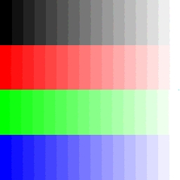

Graham Smith (gsmith98)
Graphics HW1
This assignment was written in Microsoft Visual Studio Community 2015 On a Windows 7 Ultimate (x64) machine. From what I can tell from the info panel, this means I was using Visual C++ 2015. According to this post, that means I was compiling with Microsoft (R) C/C++ Optimizing Compiler Version 19.XX.YYYYY for x64. I have tested that I was able to compile and run my submission by opening the .sln and using Visual Studio's "Build -> Build Solution", exactly the same way the code skeleton provided to us can be built.
0 late days used
Every function listed on the assignment page has been fully implemented up to and including RotateGaussian. I am additionally submitting a few art contest entrants. The HTML to follow was taken from the provided example image processing results page, but all the jpeg images shown have been produced by my own code from the source bmp's. If there is any issue with this submission, please let me know and I can work with you to remedy it.
- Noise:
 |
|
|
--noisify 0 |
--noisify .1 |
--noisify .5 |
- Brightness:
|
|
|
--brighten .5 |
--brighten 1 |
--brighten 2 |
- Luminance:
- Contrast:
|
|
 |
--contrast .5 |
--contrast 1 |
--contrast 2 |
- Saturataion:
|
 |
 |
--saturate .5 |
--saturate 1 |
--saturate 2 |
- Crop:
- Quantization:
|
|
 |
--quantize 1 |
--quantize 2 |
--quantize 4 |
- Random Dither:
|
|
|
--rDither 1 |
--rDither 2 |
--rDither 4 |
- Ordered Dither:
|
|
|
--oDither2x2 1 |
--oDither2x2 2 |
--oDither2x2 4 |
- Floyd-Steinberg Dither:
|
|
|
--fsDither 1 |
--fsDither 2 |
--fsDither 4 |
- Blurring:
- Edge Detection:
- Scaling (Nearest Sample):
|
 |
|
--scaleNearest .7 |
--scaleNearest 1 |
--scaleNearest 1.3 |
- Scaling (Bilinear Sample):
 |
 |
|
--scaleBilinear .7 |
--scaleBilinear 1 |
--scaleBilinear 1.3 |
- Scaling (Gaussian Sample):
|
|
|
--scaleGaussian .7 |
--scaleGaussian 1 |
--scaleGaussian 1.3 |
- Rotation:
|
 |
|
--rotateNearest 30 |
--rotateBilinear 30 |
--rotateGaussian 30 |
- Art:
|
|
|
"RedRandBand" |
"Crimson Wyvern" |
"Prisma Comb" |